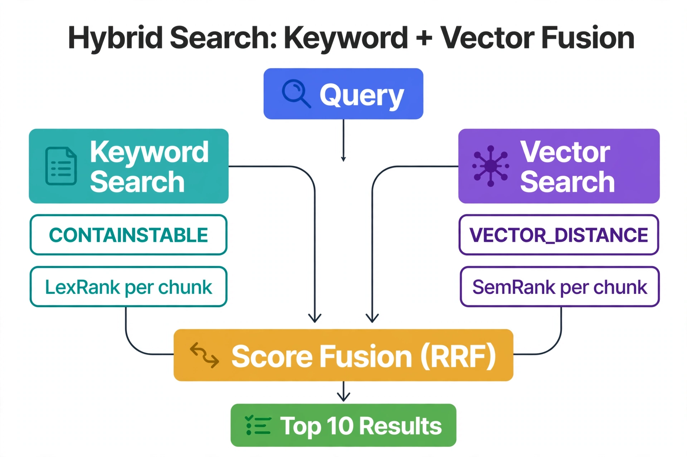

Chapter 11: Hybrid Search: Combining Full-Text and Vector Search
Full-text search and vector search solve different problems, and in production AI applications you almost always need both. Full-text search excels at exact keyword matching, proper nouns, SKU codes, error numbers, and domain-specific terminology that embedding models may not have seen during training. Vector search excels at semantic similarity, handling paraphrase, typos, and intent that keywords miss entirely. This chapter covers how to combine these two retrieval mechanisms into a single pipeline on SQL Server 2025 — the architecture decisions, scoring fusion strategies, and the practical implementation details that determine whether hybrid search actually outperforms either approach alone. You will come away with working T-SQL for full-text plus vector fusion, the reciprocal-rank pattern used across the industry, and a mental model for tuning the balance between lexical and semantic signals.
---
Two Retrieval Models, Complementary Failures
Traditional full-text search — whether SQL Server Full-Text Search with CONTAINS, Elasticsearch BM25, or any TF-IDF-based engine — operates on term frequency and inverse document frequency with normalization. The retrieval model rewards documents that share exact terms with the query. This creates predictable failure modes:
Vector search inverts these strengths and weaknesses: it finds meaning without terms, but it is sloppy about exact identifiers. A query for the specific error number 18456 will match documents about login failures generally — but the one document that names 18456 in its title might rank below five loosely-related docs. Hybrid search exists to get both: the precision of lexical matching and the recall of semantic matching, fused into one ranked list.
---
Full-Text Search in SQL Server: The Lexical Side
SQL Server's full-text engine (iFTS) has been production-hardened for decades: full-text catalogs, word breakers per language, thesaurus files for synonyms, and the CONTAINSTABLE / FREETEXTTABLE functions that return ranked results. If you already run full-text indexes, hybrid search does not replace them — it adds a second ranking signal on the same tables.
-- SQL Server: full-text catalog + index on the documents table
CREATE FULLTEXT CATALOG FTC_KnowledgeBase AS DEFAULT;
CREATE FULLTEXT INDEX ON dbo.KnowledgeChunks (ChunkText LANGUAGE 1033)
KEY INDEX PK_KnowledgeChunks
WITH STOPLIST = SYSTEM, CHANGE_TRACKING = AUTO;
-- CHANGE_TRACKING = AUTO keeps the full-text index current on every write
-- Ranked lexical search: CONTAINSTABLE returns [KEY] + [RANK]
DECLARE @keywords NVARCHAR(4000) = N'"login timeout" OR 18456';
SELECT TOP (50) c.ChunkId, c.Title, ft.[RANK] AS FtsRank
FROM CONTAINSTABLE(dbo.KnowledgeChunks, ChunkText, @keywords, 50) AS ft
JOIN dbo.KnowledgeChunks AS c ON c.ChunkId = ft.[KEY]
ORDER BY ft.[RANK] DESC;CONTAINSTABLE gives you boolean control (phrases, AND/OR/NEAR, prefix terms) plus a rank; FREETEXTTABLE does the "find me documents like this text" expansion, which is itself a useful query-rewriting step before vector search. Both are maintained incrementally — with CHANGE_TRACKING = AUTO, freshness is not a concern, and neither is the full-text population schedule once you monitor sys.fulltext_indexes for crawl lag.
---
The Fusion Pattern: Reciprocal Rank Fusion in T-SQL
The industry-standard way to combine two ranked lists is reciprocal rank fusion (RRF): for each document, sum 1 / (k + rank) across the lexical and semantic rankings (k is typically 60). RRF needs no score normalization — it works on ranks alone, which is exactly what you want when one system returns BM25-ish ranks and the other returns cosine distances on incompatible scales. Documents appearing high in both lists get the strongest boost, which is precisely the behavior you want from a hybrid system.
-- SQL Server 2025: hybrid search with reciprocal rank fusion (RRF)
-- Lexical branch: CONTAINSTABLE rank. Semantic branch: cosine distance rank.
DECLARE @keywords NVARCHAR(4000) = N'"login timeout" OR 18456';
DECLARE @q VECTOR(1536) = '[0.12, 0.87, 0.34, ...]'; -- query embedding
DECLARE @k FLOAT = 60.0; -- RRF constant
WITH Lexical AS (
SELECT ft.[KEY] AS ChunkId,
ROW_NUMBER() OVER (ORDER BY ft.[RANK] DESC) AS LexRank
FROM CONTAINSTABLE(dbo.KnowledgeChunks, ChunkText, @keywords, 50) AS ft
),
Semantic AS (
SELECT TOP (50) ChunkId,
ROW_NUMBER() OVER (
ORDER BY VECTOR_DISTANCE('cosine', Embedding, @q)) AS SemRank
FROM dbo.KnowledgeChunks
WHERE Embedding IS NOT NULL
)
SELECT TOP (10)
c.ChunkId, c.Title, c.ChunkText,
COALESCE(1.0 / (@k + l.LexRank), 0)
+ COALESCE(1.0 / (@k + s.SemRank), 0) AS RrfScore
FROM dbo.KnowledgeChunks AS c
LEFT JOIN Lexical AS l ON l.ChunkId = c.ChunkId
LEFT JOIN Semantic AS s ON s.ChunkId = c.ChunkId
WHERE l.ChunkId IS NOT NULL OR s.ChunkId IS NOT NULL
ORDER BY RrfScore DESC;A few design notes on this pattern. Each branch retrieves its own top-50 before fusion — the branches are independent, so both can use their indexes (full-text index for the lexical branch, DiskANN via VECTOR_SEARCH for the semantic branch at scale). The COALESCE handles documents that appear in only one list: they still get their single-branch score rather than being dropped. And the semantic branch shown uses exact VECTOR_DISTANCE ranking; swap it for the VECTOR_SEARCH approximate path from Chapter 2 once the corpus justifies the index.
---
Weighted Fusion: Tuning the Lexical/Semantic Balance
RRF treats both signals equally. In practice, the right balance depends on your query distribution. A support-knowledge-base workload heavy on error numbers and product codes wants lexical weight; a conceptual documentation search wants semantic weight. The weighted variant normalizes each branch's scores to [0,1] and blends with an alpha parameter:
-- Weighted hybrid: alpha = 1.0 is pure semantic, 0.0 is pure lexical
DECLARE @alpha FLOAT = 0.6; -- start here, then tune against labeled queries
WITH Lexical AS (
SELECT ft.[KEY] AS ChunkId,
CAST(ft.[RANK] AS FLOAT) / NULLIF(MAX(CAST(ft.[RANK] AS FLOAT)) OVER (), 0) AS LexScore
FROM CONTAINSTABLE(dbo.KnowledgeChunks, ChunkText, @keywords, 50) AS ft
),
Semantic AS (
SELECT TOP (50) ChunkId,
1.0 - VECTOR_DISTANCE('cosine', Embedding, @q) / 2.0 AS SemScore
-- cosine distance in [0,2] maps to similarity in [0,1]
FROM dbo.KnowledgeChunks
WHERE Embedding IS NOT NULL
ORDER BY VECTOR_DISTANCE('cosine', Embedding, @q)
)
SELECT TOP (10) c.ChunkId, c.Title,
@alpha * COALESCE(s.SemScore, 0)
+ (1 - @alpha) * COALESCE(l.LexScore, 0) AS HybridScore
FROM dbo.KnowledgeChunks AS c
LEFT JOIN Lexical AS l ON l.ChunkId = c.ChunkId
LEFT JOIN Semantic AS s ON s.ChunkId = c.ChunkId
WHERE l.ChunkId IS NOT NULL OR s.ChunkId IS NOT NULL
ORDER BY HybridScore DESC;Tune alpha empirically: run a few hundred labeled queries through alpha values of 0.3, 0.5, 0.7 and measure precision@10 or MRR against your relevance judgments. The curve usually has a broad plateau — hybrid beats either pure approach across most of the range — which means you do not need to over-tune. Log the alpha value in your deployment configuration next to the embedding model version; both are retrieval parameters that future you will need.
---
How the Dedicated Engines Do It
The same two-signal idea appears in every dedicated vector engine, with different mechanics. Weaviate implements hybrid search natively with an alpha parameter: 1.0 is pure vector, 0.0 is pure BM25, and the default fusion is a normalized weighted sum — conceptually the same blend as the query above, maintained inside the engine's inverted index plus HNSW graph. Pinecone takes the sparse-plus-dense route: you supply a sparse vector (term weights, often BM25-derived) alongside the dense embedding, and the index scores both with a configurable alpha. Qdrant supports query-time fusion across multiple named vectors per point, letting you run the same RRF idea across dense and sparse sub-indexes.
The SQL Server approach differs in one useful way: the fusion logic lives in T-SQL you own, not inside an engine's opaque implementation. That makes the blend auditable, testable with ordinary query tools, and adjustable without re-indexing — you can A/B test alpha values in a stored procedure parameter and watch the effect in Query Store the same afternoon.

The Query (blue) fans out into two independent branches. The Keyword Search branch (teal) uses CONTAINSTABLE to rank chunks lexically (LexRank) — it catches exact terms and identifiers that embeddings blur. The Vector Search branch (purple) uses VECTOR_DISTANCE to rank by meaning (SemRank) — it catches paraphrases the keywords miss. Both rank lists feed Score Fusion (RRF) (amber), which combines them into the Top 10 Results (green). The insight: hybrid search isn't a compromise — each branch covers the other's blind spot.
---
Pre-Filtering and the Approximate Path
One operational subtlety carries over from Chapter 2's filtered-search discussion: when the semantic branch runs through the approximate VECTOR_SEARCH path, over-fetch TOP_N generously before fusion. RRF only sees the candidates each branch returns — if the semantic branch returns 10 candidates and the tenant filter or fusion drops half, the lexical branch's documents dominate the final list not because they are better, but because the semantic branch was starved. Ask for 50–100 per branch, fuse, then trim to the display count. On the exact path this costs CPU; on the approximate path it costs almost nothing.
Also note the interplay between full-text and vector freshness. With CHANGE_TRACKING = AUTO, newly inserted chunks are searchable lexically within seconds, while the vector side is current as soon as the ingest pipeline writes the embedding. If you run the DiskANN index (preview write-path constraint: drop and recreate to ingest), the semantic branch sees new data only after a rebuild — a freshness asymmetry worth documenting in your runbook, since users will notice that keyword search finds a document before semantic search does.
---
Key Takeaways
CONTAINSTABLE/FREETEXTTABLE) handles exact terms, identifiers, and error codes; vector search handles meaning, paraphrase, and intent. Production retrieval needs both, fused into one ranked list.1/(k + rank) summed across branches — combines rankings without score normalization and is implementable in a single T-SQL statement with two CTEs.QueryOptimizer — Self-Hosted SQL Performance Workbench
EXPLAIN visualizer · Index advisor · Slow query dashboard · SQL Server
Test yourself on this chapter
5 questions · instant scoring · explanations included